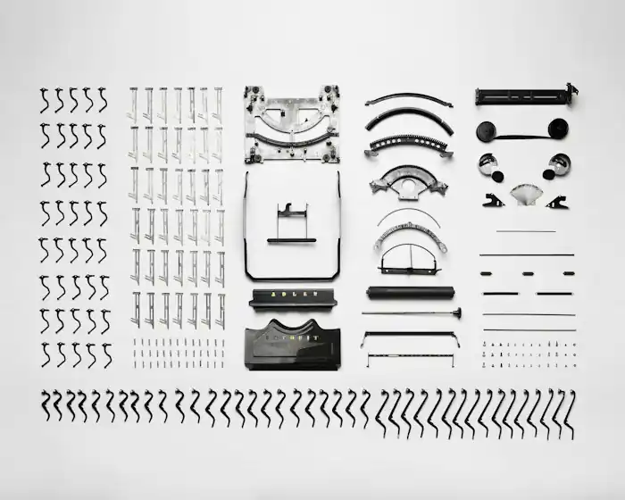

← back to the pile no. 01 of 04
Riso zine, 40 pages · 2026
Paper Cuts #12
Forty pages cut from a decade of library-sale magazines - the twelfth issue of a zine that started as a birthday present.
- Edition
- 300 copies, fluorescent pink and blue
- Paper
- Recycled 90 g, hand-stapled
- Find it
- Small Press Fair, two shops in Hackney, and by email
The idea
Every issue of Paper Cuts starts with a box of magazines from a library sale and one rule for the year. For #12 the rule was: nothing new, only what other people threw away.
Cut, glue, print
I cut for three months and glued for two weeks, then printed each spread on the risograph in two passes - fluorescent pink first, blue on top - so that the colours shift wherever the drum slipped. Every copy is folded and stapled at the kitchen table.

What happened
The first 300 sold out in two fairs. A second run is printing now, and three of the spreads go up as posters at the Zine Library in February.